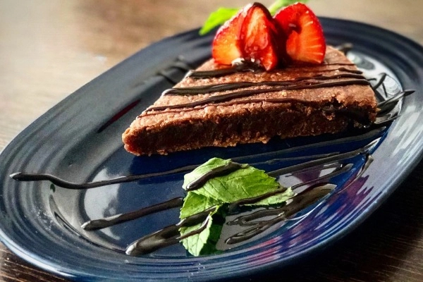

Vegan Brownie Recipe
Recipe: nefisyemektarifleri.com
Serving Size: Serves 4-6
Preparation Time: 15 minutes
Cooking Time: 20 minutes
Ingredients for Vegan Brownie Recipe:
- 1 ripe banana
- 2/4 cup brown sugar
- 2/4 cup soy milk
- 1 cup whole wheat flour
For the Chocolate:
- 1 packet of Vegan dark chocolate
- 4 tablespoons of vegetable solid fat
How to Make Vegan Brownies?
- First, mash the banana thoroughly with a fork until it becomes a smooth liquid.
- Then, add sugar and whisk until well combined.
- While they set aside, melt the solid fat in a saucepan and stir in the chocolate until melted.
- Once melted, add the milk and chocolate to the mixture, and finally add the flour and mix from bottom to top using a spatula.
- Grease a baking dish and lightly dust with flour, then pour in the mixture.
- Bake in a preheated oven at 180 degrees Celsius for about 20 minutes. Enjoy your meal! 😋